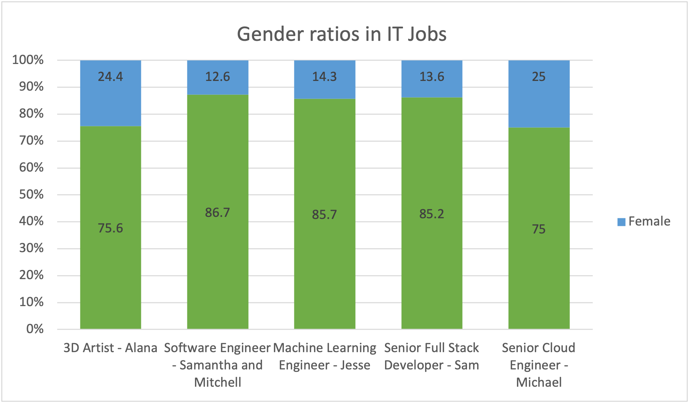
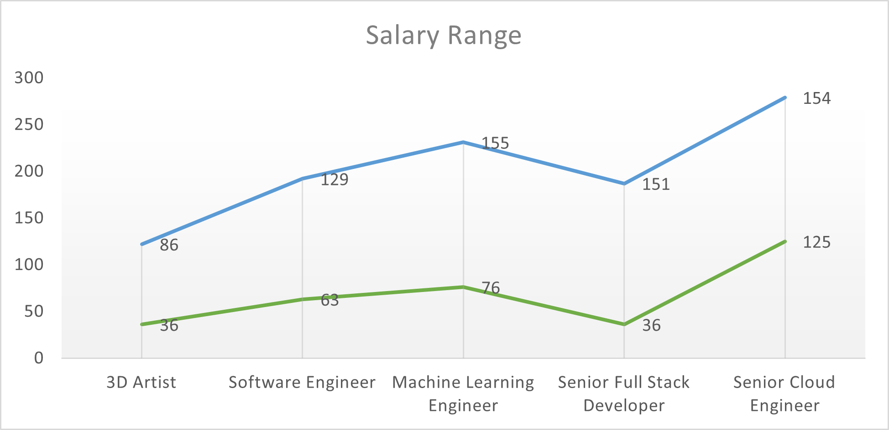

Team Profile
Creative Protocol
Jesse Corlet
- Student Number: s2931356
- Website: https://jjcorlet.github.io/myprofile/
I have a dual citizenship with Australia and South Africa. I have completed a Diploma in Screen and Media in my high school years. I have many interests; I enjoy playing poker and have an avid love of rap music. I love how Information Technology covers a wide range of topics like machine learning to predict financial markets, true Artificial Intelligence, and advancements in robotics. The thing that excites me most is that there are many fields in IT that are still being developed. Hence why my interest sparked in IT, I think that IT will be able to support me remotely when necessary.
Myer–Briggs Test – Assertive Logician
My results described me well but should be taken with a grain of salt. I relate to having trouble executing my ideas and I can be indecisive with important decision making.
Learning Style Preference Test – Strong Kinaesthetic
I prefer practical examples, trial and error and case studies. I also like learning about things that I can experience and learn effectively. I know that when I learn, I learn best by explaining concepts out loud or to others, teaching in a roundabout way.
Big Five Personality Test – Ocean (Openness, Conscientiousness, Extraversion, Agreeableness, Neuroticism)
My results have shown me that I may have a difficulty when working with a team. My indecisiveness is what I feel lets me and possibly my team down. I leave projects till the last minute before sharing. When working in a group I will have to consider all my other team members; this will be a new challenge for me. I will benefit from a team which has a decisive leader. I love working alone but will have to give this up and give up control of projects when working as a team and not as an individual. I will overcome this eventually.
Machine Learning Engineer
Machine learning engineers work in the artificial intelligence industry. They collaborate with data scientists, computer engineers and developers to create programs that allow machines to function without direct human assistance. The machine learning engineer creates models that ensure ML programs work according to requirements. They must be proficient in data science, statistics, and software engineering. ML engineers create AI algorithms for social media, online stores, Internet of Things (IoT) products and self-driving cars among others.
Pay scale 76K to 155K
Male = 85.7% Female = 14.3%
Sam Keartland

- Student Number: s3568995
- Website: https://samkeartland.github.io/
I am an avid lover of anything computers and making my life easier while exploring and playing in the world of computers and their technology. I have the coolest MySpace known to man on the internet. With my two trades behind me that are tied closely to IT with automation and Tv/ Data installs, I finally feel it’s the right time in my life to start studying something I love. I am now in the right frame of mind to finish what I started many moons ago, something truly important to me. Who wouldn’t want to study completely online through a reputable IT university in Melbourne.
Myer-Briggs Personality Test – Logistician
My results are thought to be the most abundant making up around 13% of the population. Logisticians are thought to be vital to many families as well as organisations that uphold traditions, rules, and standards. When working towards goals Logisticians hold back none of their time and energy completing each task with accuracy and patience.
Big Five Personality Test – Pragmatist
I need to see how learning is applied into practice in the real world. I am concerned with matters of fact than with what could or should be. I like to try out new theories and experiment to see if things work or not. I learn best with practicals, case studies, problem settings and discussions.
Learning Styles Test – EMTRAIN WP8
My main learning style is Pragmatist followed by Reflector, Theorist and Activist. Matching so well with Pragmatist I am concerned with matter of fact and not what could or should be. I also like to stand back and observe to a certain extent. I am slightly cautious, but I also like to collect and analyse information presented to me. I think of problems in a logical manner and value rationality and objectivity. I aim to fit things into a rational order. I do tend to immerse myself into new experiences, I enjoy the here and now. I tend to be open minded enthusiastic and flexible.
I see myself and extremely introverted in which I find it hard to interact with others a little hard at times. None of my traits I believe will not weigh heavily when working in a group or team environment. I do tend to get a tad grumpy with people who do not pull their weight and contribute to a team. This, I need to consider, and I would consider this to be a downfall of mine and I must remember that I am not the only one working in a team, I must remember to share the load.
Senior Full Stack Developer
They are web developers equipped to work with a digital entity’s front and back ends, meaning they are usually skilled with aspects of computer programming, user experience (UX) design, project management, and in many cases, client communication. This specialized hybridization has generally increased the demand for full stack developers in a variety of professional capacities.
Pay scale 36K to 151K
Male = 85.2% Female = 13.6%
Michael Pattie

- Student Number: s3930699
- Website: https://mikepattie.github.io/Asssignment/
I am a British born; some might say adopted Australian who loves living down under. I am an Electrician by trade, and I am looking toward a career change from construction sites and the building industry. I love to build PCs. When I was a younger, I remember thinking that it was impossible that somebody can create such a beautiful digital landscape in which I can play in. My interest in IT stemmed from there. I am a great problem solver, so my love of fixing computers or phones for friends and family grew out of satisfaction. I am a support IT Analyst, so whilst I do have experience in the IT world, I would like to consolidate my knowledge and learn a lot of new things.
Myer-Briggs Test- Assertive Entrepreneur
I am full of passion and energy. I can tend to get caught in the moment. I can be risk prone and impatient and just want to get things done. I like to think on my feet and can make quick decisions. I like to be in control and steer my own ship, as the saying goes.
Learning Style Test – EMTRAIN
I am mostly a Pragmatist which means that I need to see things and put my learning into practice. I like to try out new ideas and theories to see if they work or not. Reflector and Theorist style received that same percentage which I found interesting in that whilst I do like to stand back and observe I also like to think things through in a logical manner.
Creativity Test – score was 49.79 typical is 62.92
I am a practical and creative person and I like to make my own bold decisions and put them into practice in ways that others would not dream of, hence this is where my creativity comes into play.
I can be dismissive of other people’s ideas something in which I will have to learn to combat when working in a group. I do like to push boundaries with regards to new ideas others may not be comfortable with. I will listen carefully when conflict arises and consider other people’s ideas. I will try and see other perspectives in a patient manner. I will show respect for rules and only pursue ideas in the scope of the task.
Senior Cloud Engineer
Cloud engineers specialize in the creation, testing, and implementation of software applications at a company or an organization. They are the technical professionals responsible for the planning, design, management, maintenance, and support of cloud computing applications.
Pay scale 125K to 154K
Male = 75% Female = 25%
Alana Spicer

- Student Number: s3933582
- Website: https://aspicer79.github.io/Assessment-One/
I am a Brisbane born mum of two teenage children. I currently work in the health sector and would like to continue my IT path from many years ago, somehow a good life got in the way. My interest in IT was sparked whilst at school, my teacher was my inspiration just as the world wide web become known to humans. Boy has technology come far; my imagination was filled with endless possibilities. I am not sure to what my exact interest in IT is, but I have worked with 3D graphics before and enjoyed this immensely. I do not have a background in IT apart from using my mobile phone daily but would like to pursue something different other than health care given this crazy covid world in which we live.
Myer-Briggs Test – The Consul
Whilst I am known in my test results as the caregiver, I tend to be extroverted rather than introverted, loyal and organised. Whilst I enjoy working independently, I enjoy working with others and gain energy out of doing so. I enjoy helping others and am sensitive to their needs. I do like to have control over my environment and like to feel in command.
Learning Style test – Strong Tactile Learner
I remember things best once I have gained experience in them and do best by being out of my chair and giving things ago in a practical sense. I don’t understand things if just read them. Reading bores me. I talk a lot with my hands and have been known to be a fidgety student because usually sitting too long drives me nuts.
Big 5 Personality test
At times I can be creative, curious, and adventurous and then other times I feel I need routine. I am generally a good problem solver in which I consider the tried-and-true method, but I also like to think outside the box. I tend to be a social butterfly and love meeting new people and building relationships with others. I tend to speak more than I listen but always seem calm and level-headed. My mood can fluctuate depending on the day, sorry group. I tend to look on the brighter side of life and even though my mood can fluctuate I try and give out a vibrant personality. I do my best at everything I do even if there is nothing in it for me.
I listen to people when and where needed and help in the best way I know how can usually offer helpful suggestions in solving a problem. I am a visual learner not so textbook based. I generally follow direction well given a task; I am not a group leader. I must learn to give myself more credit where credit is due. I have a bad habit of not liking to work in groups and prefer to work alone, this is something that I will learn to overcome as I get happiness from helping other people. I am not a good leader I am a follower.
3D Artist
A three-dimensional artist, or 3D artist, works in media production and creates elements for video games, 3D images, and 3D movies. Primarily, you create animations and graphics by making use of both illustrations and computer programs. 3D artists know everything about form, colour, and light. You create 3D images, review, and make changes according to feedback, and create models from wood, clay, and other materials. 3D artists usually work as a team; you are assigned a task and role according to your strengths.
Pay scale 36K to 86K
Male = 75.6% Female = 24.4%
Mitchell Walsh

- Student Number: s3405506
- Website: (Still in Progress)
I am western Sydney boy born and bred. I attended school here and still live in the area as an adult. I am plumber by trade and have worked on many prestigious buildings of Sydney. I am an avid fan or snooker and anything that is played on a pool table. My love for this game began when I was 18 and was legally allowed to go to the pub. I was fascinated about the game and how the players achieved each shot.
The movie Terminator 2 was released back in 1991, and although I viewed it a few years after this, it was this that sparked my interest in IT. I thought it was incredible that there could be robots that destroy mankind. So, in today’s world, Artificial Intelligence (AI) is a reality. I undertook a degree in finance which has helped to further my interest in IT with the programming algorithmic trading bots, stock screeners, economic indicators, and news scanners. The world of investment has quickly become robot versus robot.
Myer – Briggs Test – Logistician (ISTJ-T)
I am introverted and prefer to think before saying. I am less likely to assert my opinion even when I hold strong opinions and values about certain subjects and topics. I take responsibility for my work and my actions. I would rather sit back and observe a task to be done and complete it by doing and then learning. I prefer to analyse my surroundings. I don’t like laziness and dishonesty. Honesty is far more important than emotional state and I am sometimes considered blunt or cold. I am a thinker and enjoy problem solving.
Learning Style Test- Tactile/ Kinesthetics
I am a visionary who likes to share ideas and visions of the future with others while I also like to hear the ideas of others. I tend to look for roles where I can visualise the future vividly. I am very ambitious and maintain focus on improving things that work not fixing broken things. I avoid roles that consist of continuous problem solving. I am a faithful person and I make efforts to discover my true passion and tie my work to it. I respect others and give them to opportunity to speak and learn.
I like to be on the leading edge of my organisation and strategic plans and be involved in planning and risk management. I do give myself plenty of time to think through a situation, read books and attend courses or seminars in planning for the future.
I can bring structure to a chaotic situation as I tend to be a balanced person and I will not rest until order is restored. I seek notice for deadlines and project milestones.
Strengths and Weakness Test
I am person who likes to share ideas and visions of the future with others, I like to hear others’ ideas too. I tend to look for roles where I can visualise the future. I am ambitious and hardworking and like to maintain a focus on improving working things not fixing broken things, I avoid roles that consist of continuous problems solving. I respect others and give them to opportunity to speak and learn.
My top 5 strengths are: Visionary, Ambition, Faith, strategic thinking, and balance.
My weakness is Salesmanship.
The test indicate I am a goal driven introvert who works hard to get the job done. Although I will rise above any communication barriers my focus to complete tasks and get the job done. I would fit in with other group members who are hardworking, and goal orientated.
Software Engineer
Software engineers design and create computer systems and applications to solve real-world problems. Software engineers, sometimes called software developers, create software for computers and applications. If you’re an analytical thinker who enjoys solving problems and making digital products easier to use, you may find a career as a software engineer rewarding.
Pay scale – 56K to 118K
Male = 86.7% Female = 12.6%
Samantha Watts

- Student Number: s3935798
- Website: https://swatts-rmit.github.io/myProfile/
I am starting my career path anew before my youngest child starts school. I have a background in health and tourism that I hope will add a depth of scope to my career path through IT. I am an organised and I prefer order and calm. I love martial arts specifically Taekwondo and I hope to one day get back into the sport. I also enjoy a bit of Swift playgrounds in my spare time or playing on the Switch.
Myer-Briggs test – Advocate personality type
I am a peacekeeper and a great team player. I enjoy working in teams where cooperation and independence are equally valuable. I will always try to go the extra mile, with this comes burn out which I consider to be a weakness of mine. I am sensitive to criticism and strive for perfectionism. Therefore, I see this as a downfall as there will be other team members that I will have to work with that will view these attributes as a weakness.
Learning Style Test – Auditory/ Tactile Learner
I learn by hearing and doing. Even though I find this a great way to learn for me especially in class situations and lectures I know that I do need regular breaks while I study. I am a great listener and I feel that listening to the needs of others and implementing ideas will be beneficial for our group.
Test colour – Extrovert. Introvert
My personality qualities indicate that I am creative, imaginative, attuned to the emotions and needs to others. I communicate my knowledge well to others. I set action plans to achieve my set goals. My personality features will blend well within a group environment to reach our combined academic goals.
Software Engineer
Software engineers design and create computer systems and applications to solve real-world problems. Software engineers, sometimes called software developers, create software for computers and applications. If you’re an analytical thinker who enjoys solving problems and making digital products easier to use, you may find a career as a software engineer rewarding.
Pay scale 63K to 129K
Male = 86.7% Female = 12.6%
Group Dynamics
The only common elements with all these IT positions are that they involve the use of computers and Information Technology in some form. With our collective job descriptions, we have the broad skill set and creative depth for a top performing IT company that can meet the requirements of our potential clients. In our team we have someone to enhance graphics, to design systems and application, a team to collaborate data and develop programs, skilled computer programmers both front and back ends, and someone to test and implement the application or software. We have 4 future engineers, 1 developer and 1 artist. All the job descriptions are similar but distinct and they collaborate to assist in the creation of a final product. It is interesting to note that within our contingent we have a 33% female makeup that is well above the median percentage of individuals entering the IT industry workforce. This would suggest a significant growth of the IT workforce as a whole and a shift for increased interest and diversity in the workspace.
 